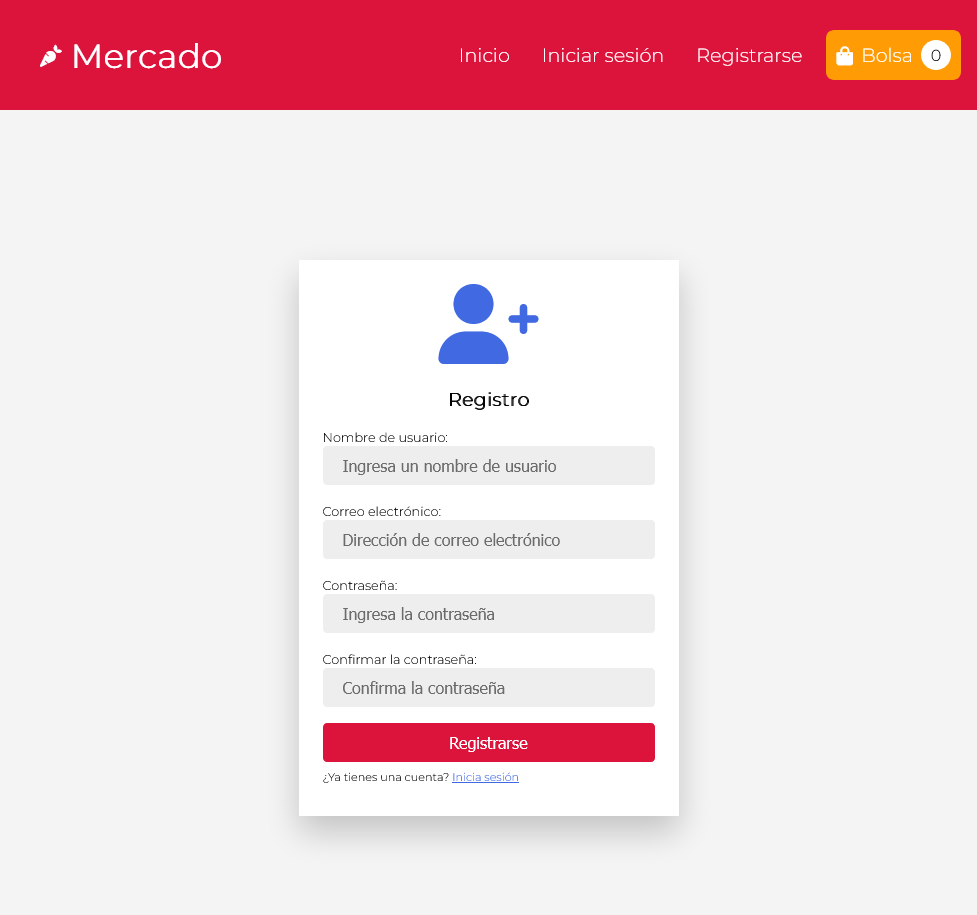
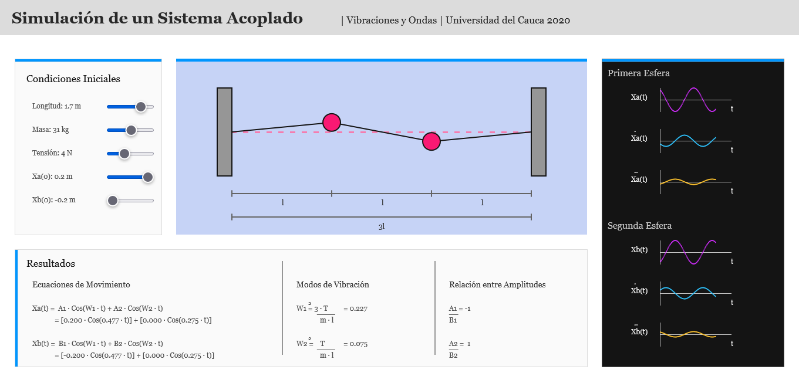
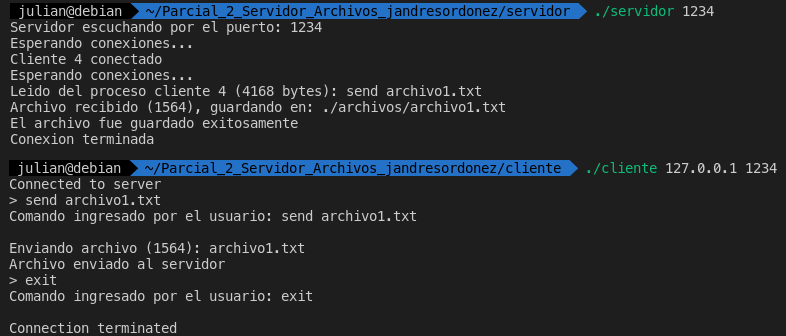
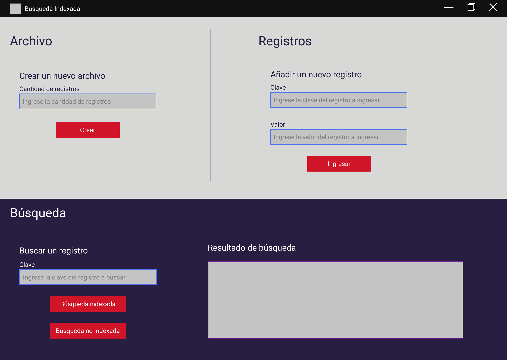

Proyectos
-
Unicauca Conectada
Proyecto Académico - Ingeniería de Software II - 2021
-

MERN Store
Proyecto Académico - Ingeniería de Software I - 2021
-

Simulaciones Vibraciones y Ondas
Proyecto Académico - Vibraciones y Ondas - 2020
-

Cliente-Servidor FTP
Proyecto Académico - Sistemas Operativos - 2021
-

Búsqueda Indexada
Proyecto Académico - Bases de Datos II - 2021